ブロック崩しについて
かつて家庭用テレビゲームの元祖として大ヒットしたブロック崩しですが、Unityを使えばものの1時間程度で作れてしまいます。本解説ではそのブロック崩しをUnity入門者向けに解説して、一緒に作っていきます。
プログラム自体は非常に簡単で、順番を追って作っていけば自然にUnityでのプログラミング方法が身につくでしょう。
なお、ブロック崩しは英語で「Break Out」と言うらしいです。
全くブロックも崩すも入っていませんが、あちらではとある理由でその名前になったそうです。
興味のある方は調べて見てください。
制作例
こちらは本解説のプログラムを少し発展させたものです。このようなゲームを作っていきます。
Unityの準備
本説明で使うエディタはUnity 6 (執筆時点で6000.0.17f1)です。Unityのインストール、アカウントの作成、Visual Studioのインストールなどは他の文献を参考にしてください。
Unityは日本語化も可能ですが、本解説では英語版を使用します。
メッセージまで全て英語になってしまうので敷居が高く感じられるかもしれませんが、実際にプログラミングの現場では英語版を使うことが多いことと、日本語訳が中途半端な部分が多いためです。
もし英語が分からなくなったらUnityの環境設定で日本語にすぐ切り替えられますのでご安心ください。
プロジェクトの作成
新規プロジェクトを作成する
Unity Hubを起動し、「新しいプロジェクト」ボタンをクリックしてプロジェクトを作成します。
プロジェクトのテンプレートを2Dとして作成します。
エディタが複数インストールされている場合はバージョンチェックを忘れないでください。
プロジェクト名や保存場所は、トラブルを避けるために全角文字（日本語）の不使用をお勧めします。
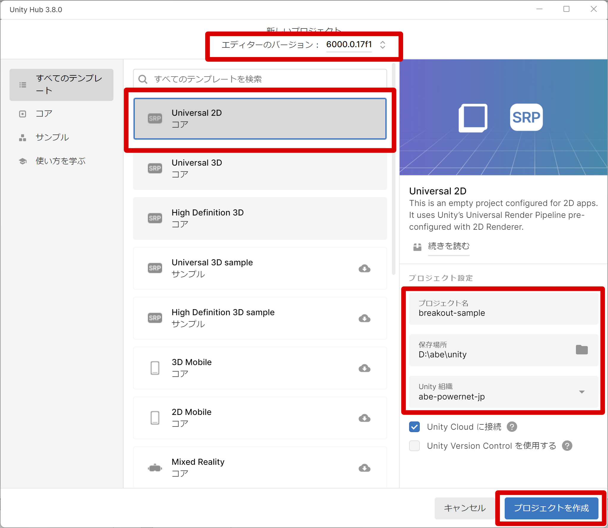
シーンを保存する
ヒエラルキーウインドウの「SampleScene」となっている部分の右側の「・・・」を縦にしたアイコンをクリックし、「Save As...」を選択します。今回は「MainScene」という名前にして保存しましょう。
「Assets」フォルダの中に「Scenes」があるので、そのフォルダに入ってから保存します。
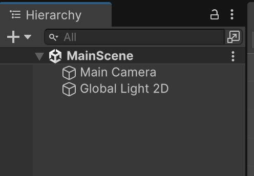
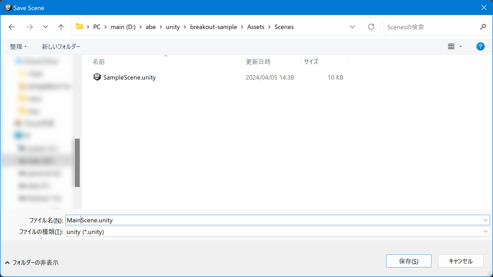
unityの基本的操作を学ぼう
ここではゲーム作る上で最も基本的な単位であるゲームオブジェクトの作成や、それにくっついているコンポーネントという物の設定方法を学んでいきます。 これでだいぶ操作方法のイメージが出来るようになるはずです。カメラの設定を行なう
初期状態では表示範囲が狭いので、カメラの表示範囲を調整します。インスペクタウインドウにあるTransformのPositionの値をX=0,Y=0,Z=-20（以降、「(0, 0, -20)」のように表現します）に設定してカメラを位置を変更します。
そして、表示範囲を広くするために、CameraのProjection▶Sizeの値を12にします。
背景の色は初期状態で青になっています。CameraコンポーネントのBackgroundで変更できます。
今回は黒にしましょう。

壁を作成する
ボールが外に飛んでいかないように、壁を作成します。ヒエラルキーウインドウでマウスを右クリックし、3D Object▶Cubeを選択して作成します。
Cubeを4つ作成して大きさと位置を変えて上下左右の壁を作りましょう。
サイズとポジションは以下の表の通りです。
| オブジェクト 名称 | 位置(Position) | サイズ(Scale) | ||||
|---|---|---|---|---|---|---|
| X | Y | Z | X | Y | Z | |
| Wall Left | -7 | 0 | 0 | 1 | 20 | 1 |
| Wall Right | 7 | 0 | 0 | 1 | 20 | 1 |
| Wall Top | 0 | 10.5 | 0 | 15 | 1 | 1 |
| Wall Bottom | 0 | -10.5 | 0 | 15 | 1 | 1 |
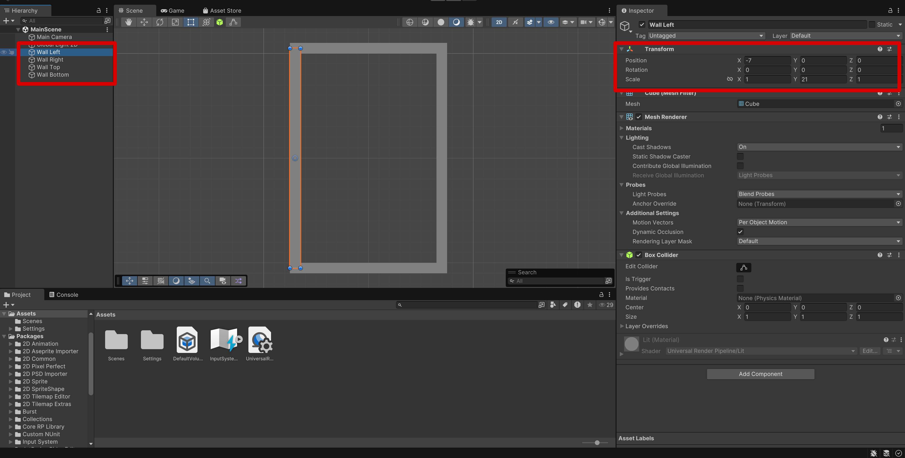
ボールを作成する
壁と同様にヒエラルキーウインドウでマウスを右クリックし、3D Object▶Sphereを選択して作成します。名前を「Ball」にします。
Positionは(0, 0, 0)、Scaleは(0.5, 0.5, 0.5)にします。
プレーヤー（バー）を作成する
3D Object▶Cubeを選択して作成します。名前を「Player」にします。
Positionは(0, -8, 0)、Scaleは(2, 0.5, 1)にします。
ブロックを作成する
3D Object▶Cubeを選択して作成します。名前を「Block」にします。
Positionは(-5, 3, 0)、Scaleは(2, 0.8, 1)にします。
ブロックは複数必要ですので、とりあえずもう2つ作りましょう。
今作ったブロックをマウスで選択状態にして、CTRL+Dで複製できます。複製したら位置を変更してください。
【2個目】名前: Block (1)、Position: (-2.5, 3, 0)、Scale: (2, 0.8, 1)
【3個目】名前: Block (2)、Position: (0, 3, 0)、Scale: (2, 0.8, 1)
本当はブロックはもっと必要ですね。なぜ3つしか作らなかったかは後ほど説明します。

マテリアルの作成
マテリアルとは？
3dモデルの色や画像の色を指定する物です。今のゲームでは 全てのゲームオブジェクトの色がグレーとなっていて味気ないです。これはデフォルトで適用されているマテリアルの色がグレーだからです。
よって、unityの世界に色どりをつけるために、マテリアルを作成します。
マテリアル用のフォルダを作る
今回の場合は、壁、ボール、ブロックの3種類のオブジェクトがあります。これらを区別するためにそれぞれに色を付けましょう。
マテリアルが3つ必要になるので、それらをまとめて管理できるフォルダを作成します。
プロジェクトウインドウの上で右クリックして、Create▶Folderを選択して作成します。
フォルダの名前は「Materials」にしましょう。
作成したらダブルクリックして中に入ってください。

ここにマテリアルを作っていきます。
壁用のマテリアルを作る
まずは壁用のマテリアルを作ってみましょう。プロジェクトウインドウで、Create▶Materialを選択して作成します。
名前は「Wall」にしましょう。
アイコンをクリックして選択状態にしてください。
Shaderを「Unlit/Color」に変更します。
shaderは簡単に言うとあるマテリアルが3dや画像をどのような方法で描画するかを指定するコードが書かれたものです。
難しいのでここでは深ぼりません。
次にMain Colorを好きな色に変更します。
例では茶色にしてみました。
その後、マテリアル「Wall」を壁のオブジェクト「Wall Left」にドラッグ＆ドロップします。
色が変わったのが確認できたでしょうか。
同じように上下と右の壁にもドラッグ＆ドロップして色を付けていきましょう。
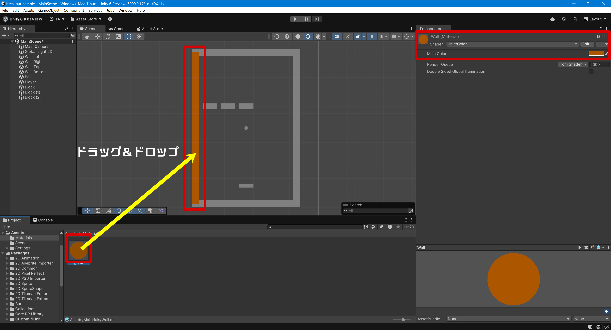
ボール用のマテリアルを作る
壁と同様に、Create▶Materialを選択して作成します。名前は「Ball」にしましょう。
壁と同様に、Shaderを「Unlit/Color」に変更して、Main Colorも変えましょう。
例では白にしてみました。
そしてマテリアル「Ball」をゲームオブジェクト「Ball」にドラッグ＆ドロップします。
プレーヤー用のマテリアルを作る
名前は「Player」にしましょう。例では緑にしてみました。
前述と同様にプレーヤーに適用します。
ブロック用のマテリアルを作る
名前は「Block」にしましょう。例では青にしてみました。
前述と同様にブロック全てに適用します。

プレハブを作ろう
プレハブのメリット
さて、先ほどブロックを3つ作って、マテリアルをそれぞれにドラッグ＆ドロップしました。3つだったからさほど苦労はしませんが、このゲームには横5個×縦4列＝20個ぐらい必要です。
しかもこれからコンポーネントと呼ばれるものや、スクリプトと呼ばれるものを適用していきます。
そう考えると、全てにそれを行なうのは大変な作業でしょう。
ブロックはそれぞれが独立はしていますが、形や色などの内容は同じで、位置が変わっているだけですね。
機能が同じなら、同じように扱おうじゃないかというのがプレハブの思想です。
プレハブはPrefabと書きます。あの家の建築で良く聞くプレハブと同じです。
プレハブはシーンにあるゲームオブジェクトから生成できます。
プレハブを作ると、そこからコピーを大量に作成できます。そして、プレハブに対してマテリアル等を適用すれば、
その全てのコピーにも同じ変化が適用されます。
作業効率がアップし、さらにバグなどが出にくくなりますので、同じものを作る場合はプレハブを作りましょう。
ブロックのプレハブを作る
プロジェクトウインドウに「Prefabs」というフォルダを作ります。そのフォルダに、ヒエラルキーウインドウからオブジェクト「Block」をドラッグ＆ドロップします。
すると、「Block」というプレハブが生成されます。
今後はこちらにマテリアルなどを適用していきます。
一度プレハブを生成すると、プレハブからコピーしてオブジェクトを生成できるようになりますので、元になっていたゲームオブジェクトは削除しても大丈夫です。
ではオブジェクト「Block」「Block (1)」「Block (2)」は削除してしまいましょう。
空のゲームオブジェクトを作ってブロックをまとめよう
Blockの数が大量に増えてインスペクターが見づらくなる事が予想できます。そんな時は空のゲームオブジェクトを使ってまとめます。 ヒエラルキーウインドウで右クリックし、「Create Empty」を選択して、空のゲームオブジェクトを生成し、名前を「Blocks」にします。ここにブロックを大量に生成していきます。
オブジェクト「Blocks」に、プロジェクトウインドウのプレハブ「Block」をドラッグ＆ドロップしてみてください。
1つブロックが生成されます。
同様に、どんどん追加していってみてください。
同じ位置に表示されてしまうので追加されていないように見えるかもしれませんが、「Block (1)」のように数字が入ったものが追加されます。
そのオブジェクトに対して、最初のブロック作成でやったように位置を変更してください。
全部で10個作ってみましょう。「Block (9)」まで生成します。
この表で伝わりますか？■はブロックだと思ってください。
| Position | X=-5 | X=-2.5 | X=0 | X=2.5 | X=5 |
| Y=4.5 | ■ | ■ | ■ | ■ | ■ |
| Y=3 | ■ | ■ | ■ | ■ | ■ |
Z軸が0以外だと画面からブロックが消えたり、ボールが当たらなくなります。

ボールを動かす
さて、ここまででやっと外観が完成しました。これから先はゲームとして作り込んでいきます。
まずはボールを動かす方法です。
ボールを動かすには？
ボールを動かすには主に2つの方法があります。一つ目は座標をつかさどるtransformを直接いじって動かす方法、二つ目がUnityの大きな特徴である物理演算を用いて動かす方法です。
具体的には重力や壁の当たり判定を考慮した移動が実現できます。今回はボール、つまり、跳ね返ってほしいので、二つ目の方法を採用します。
そのためには、物理演算をつかさどる「Rigidbody」コンポートネントと、それにセットする「Physics Material(物理演算マテリアル)」を二つを用いてみましょう。
物理演算コンポーネントを追加する
ヒエラルキーウインドウのオブジェクト「Ball」を選択し、インスペクタウインドウの一番下にある「Add Component」をクリックします。その中から、Physics▶Rigidbodyを選択してください。
数値は下記のようにしてください。
| 項目 | 内容 | 説明 |
|---|---|---|
| Mass | 1 | 質量。オブジェクト同士の衝突時、Massの高い方が低いオブジェクトを押す。 ボールはまず1としておく。 |
| Drag | 0 | 抗力。高くなるほど減速する。 ボールは減速してほしくないので0。 |
| Angular Drag | 0 | 回転抗力。高くなるほど減速する。 ボールは減速してほしくないので0。 |
| Use Gravity | チェック無し | 重力を使う場合はチェック。 ボールに重力は不要。 |
| Constraints▶Freeze Position | X,Yは無し、Zにチェック | 位置を固定する場合にチェック。 ボールはZ軸に飛んでほしくないのでZは固定。 |
| Constraints▶Freeze Rotation | X,Y,Z全てのチェックを外す | 回転を固定する場合にチェック。 ボールは回転してほしいのでチェックしない。 |

物理演算マテリアルを追加する
ボールにはもう1つ必要な動作があります。壁、ブロック、プレーヤーと衝突したときの動作です。
物理演算マテリアル「Physics Material」は、他の物体と衝突したときにどのくらい摩擦が生じるか（摩擦係数）、どのくらいの強さで跳ね返るのか（反発係数）を指定するものです。
※色付けをする際に作ったマテリアルと一部分名前が被っているが別物である。
プロジェクトウインドウの上で右クリックして、Create▶Physics Materialを選択してください。名前は「Ball Physics Material」にしましょう。
数値は下記のようにしてください。
| 項目 | 内容 | 説明 |
|---|---|---|
| Dynamic Friction | 0 | 動的摩擦。数値は0～1。移動しているオブジェクト（衝突後のボール）に発生する摩擦。0の場合、摩擦はなくつるつる滑る。１の場合は強い摩擦力が発生しオブジェクトはすぐに停止する。 ボールは摩擦不要なので0。 |
| Static Friction | 0 | 静的摩擦。数値は0～1。静止しているオブジェクト（衝突の瞬間）に発生する摩擦。０の場合、摩擦はなくつるつる滑る。１の場合は強い力が作用しない限りオブジェクトは静止したまま。 ボールは摩擦不要なので0。 |
| Bounciness | 1 | 弾性力。数値は0～1。0の場合全く弾まない。1は物理法則を無視してすごく弾む。 ボールは弾性力が落ちると困るので1。 |
| Friction Combine | Minimum | 衝突するオブジェクト間の摩擦度合いの処理方法。種類は後述（Bounce Combineと同様）。 |
| Bounce Combine | Maximum | 衝突するオブジェクト間の摩擦度合いの処理方法。種類は後述（Friction Combineと同様）。 |

| 項目 | 説明 |
|---|---|
| Average | 2つの摩擦力を平均化して反映 |
| Minimum | 2つの摩擦力の小さい方を優先して反映 |
| Maximum | 2つの摩擦力の大きい方を優先して反映 |
| Multiply | 2つの摩擦力を乗算した値を反映 |
完成したマテリアルをヒエラルキーウインドウのオブジェクト「Ball」にドラッグ＆ドロップしましょう。
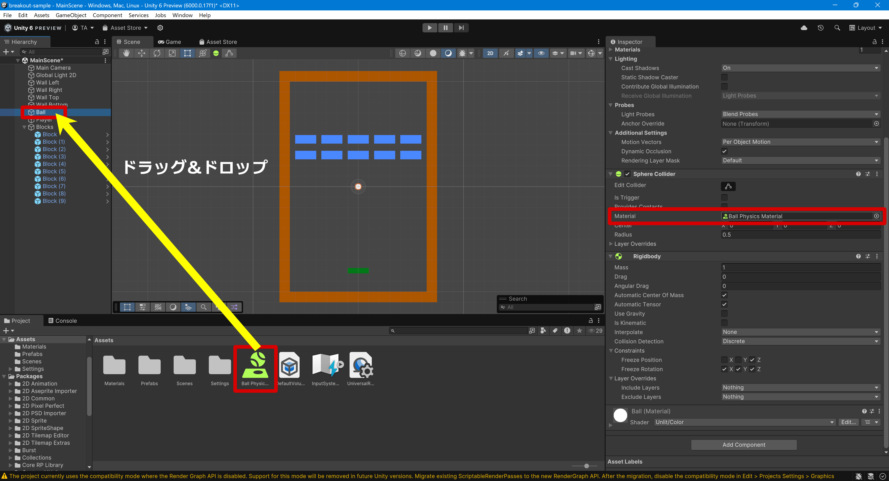
スクリプトでボールを動かす
さて、これだけではボールは動きません。なぜなら、ボールに速度も与えられていませんし、飛び出す角度も与えられていないからです。これを与えるために、スクリプト(自作コンポーネントとも言われる)を作成します。ここで初めてプログラミングをすることになります。
スクリプトの詳細については後ほど集中的に解説します。
ここでは軽く説明します。
では、Assetsにスクリプト用のフォルダを作成しましょう。
プロジェクトウインドウの上で右クリックし、Create▶Folderを選択してフォルダを作ってください。名前は「Scripts」にしましょう。
Scriptsフォルダをダブルクリックして中に移動し、そこでCreate▶Scripting▶Empty C# Scriptを選択します。名前は「Ball」にしてください。
そして、スクリプト「Ball」をオブジェクト「Ball」にアタッチします。
今までドラッグ＆ドロップすると記述してきましたが、Unity的には「アタッチ」といいます。
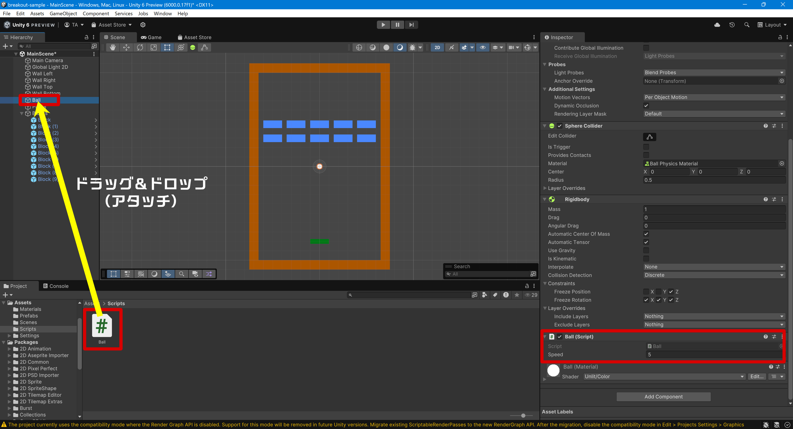
スクリプト「Ball」をダブルクリックするとVisual Studioが立ち上がって、スクリプトを編集できるようになります。
スクリプトを次のようにしてください。
コピー＆ペーストして貼り付けると楽です。
少し解説すると、StartメソッドでRigidbodyコンポーネントにアクセスし、速度velocityを設定することでボールを動かします。
X成分、Y成分を同じにしているため、動き出しは右上に45度で進むことになります。
移動の速さはインスペクターウインドウで調整できるように「public」にしています。
このように、スクリプトに初期値を書いておきながら、UnityのUI画面で変えることができるのもUnityの特徴です。
この辺の詳しい説明も後述しますので、今は覚えなくて大丈夫です。
編集し終わったら保存して、Unityに戻ってきてください。
なお、アタッチする前にスクリプトを編集してしまった場合、次のような警告画面が出てくるかもしれません。
その場合は最初の選択肢をクリックしてください。
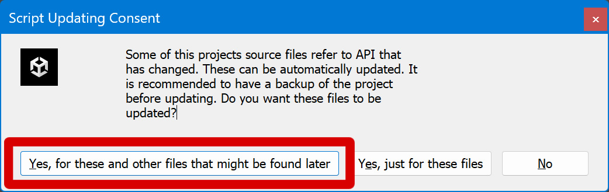
実行してみる
では実際にどのような動きになるか、実行してみましょう。画面上部にある実行ツールの実行ボタン「▶」を押してください。
ボールがまず右上に動いて、壁、ブロック、プレーヤーにあたると跳ね返るのが分かると思います。
ずっと続いてしまうので、適当なところでストップボタン「■」を押して止めてください。
なお、実行した瞬間に壁、ブロック、プレーヤー、ボールのどれかが消えてしまう場合、positionのZ値が0以外になっている可能性があります。その場合は0に修正して下さい。
プレーヤーを動かす
さて、ボールも動いたことですし、次はプレーヤーを動かしてみましょう。キーボードの左右の矢印キーを押したら左右に動くようにしましょう。
プレーヤー用スクリプトを作成してアタッチする
プレーヤーを動かす方法はボールの時と同じく、transformの位置を直接変える方法と、Rigidbodyを介してtransform動かす方法の二種類があります。壁にぶつかる可能性(つまり物理演算をする)を踏まえるとボールと同じく後者の方が良いですが、学習のため、前者を採用します。
プロジェクトウインドウのScriptsフォルダをダブルクリックして中に移動し、そこでCreate▶Scripting▶Empty C# Scriptを選択します。名前は「Player」にしてください。
そして、スクリプト「Player」をオブジェクト「Player」にアタッチします。
コードは次のようになります
ブロックを消す
さて、ボールも動いてプレーヤーも動きました。次はボールがブロックに当たったらブロックを消すようにしましょう。ブロックを消すスクリプトをアタッチする
Scriptsフォルダの中でC# Scriptを作ります（もう手順はお分かりですよね？）。名前は「Block」にしてください。そして、スクリプト「Block」をプレハブ「Block」にアタッチします。
ヒエラルキーにブロックが十個もありますが、それら一つ一つにアタッチするのではなく、プレハブな「Block」だけに
アタッチするので気をつけてください。
コードは次のようになります
実行してみる
では実際にどのような動きになるか、実行してみましょう。実行ボタン「▶」を押してください。
ボールがブロックに当たるとブロックが消えるのが分かると思います。
ブロックが全部消えても続いてしまうので、適当なところでストップボタン「■」を押して止めてください。
Unityのスクリプト「C#」について
スクリプトにも少し慣れたところなので、そろそろスクリプトの解説をします。Unityのプログラミング言語「C#」とは？
C系言語の1つでオブジェクト指向のプログラミング言語です。C言語とJavaの良いところを取り入れた言語ですが、よりJavaに寄せたものとなっています。
C#はマイクロソフトが開発していて、IDEはVisual Studioを利用することができます。
詳しい説明は他の文献をご覧ください。
本解説では、Unityで使うスクリプトについて解説します。
Unity独自の使い方
Unityではゲームオブジェクト、コンポーネント、マテリアルなど、いろいろ組み合わせて使います。それを表現するために、独自の使用法があります。
ボールを動かすときに使用したスクリプトを解説していきます。
・Unityではほぼ全てのスクリプトに付くおまじないのような行です。Using UnityEngine;
・軽く説明するとUnityEngineというライブラリ(関数やデータが詰まった箱)の中にある物を使うという意味の行です。
・Ballというクラスにしますという宣言です。MonoBehaviourはBallクラスの継承元となる親クラスです。意味不明だと思いますが、class Ball : MonoBehaviour {}
今回のゲーム制作には関係ないので継承とやらは気にしなくて良いです。肝心なのはクラスです。
・クラスはC#の最も中心となる概念です。書けるようになる難易度は低いのですが、説明がめちゃくちゃ難しいです。書いて、使い方を覚えましょう。
・Unityではクラス名とスクリプト名を同じにしないとエラーがでます。
・「//」で始まる行はコメントと言います。// ボールの速度を・・・
プログラム中でメモ書きのように使います。
・コメントを多く残しておくと、後でプログラムを見直したときに分かりやすくなり、さらに他人にプログラムを修正してもらう場合にも非常に便利ですので、できるだけ丁寧に書いておきましょう。
概要としてボールのスピードを表す変数を宣言しています。publicやらfloatやら色々とついていますね、詳細を語ります。public float speed = 5.0f;
・public：c#側とunity側で二つの異なる意味を持ちます。前者はspeed変数を他のクラス(ここでは他のスクリプト)から参照可能にするという意味を持ち、
後者ではunityのgui経由でspeed変数の値を変更できるようにすると言う意味を持ちます。
今回はunityのインスペクターで自由にいじりたいので後者の意味を目的としています。
・float：小数(※32bitの長さ)しか入らない変数であることを示しています。
C#には他にint（整数型）、string(文字列型)、floatの高精度版であるdouble（※64bitの長さ）等があります。
特に、Unityでは小数を多く使いますので、floatは目にする機会が多いかと思います。
・5.0fのf：c#ではfloatとint(整数)を区別するために数値の最後に「f」を付けます。
5.0fは整数の5と値は同じですが、処理の仕方に違いがあるので、floatの場合は最後にfを付けると覚えて置いてください。
・なお、publicと相対する「private」というのもあって、これを付けると他のスクリプトからは参照できなくなる上、
unityのgui経由で変数の値をいじれなくできます。使い分けると便利です。
・物理演算をつかさどるRigidbodyコンポーネントの参照を持つための変数を宣言しています。Rigidbody myRigidbody;
・もし、位置をつかさどるTransformコンポーネントの参照が入る変数が欲しければ左のRigidbodyをTransformにします。
・実行開始時にunityによって、一度だけ呼ばれるメソッドです。void Start() {}
・この様にunityによって自動で呼ばれる関数の総称をイベント関数と言います。
・初期値を決める等、初期化系の処理を書く事が多いです。
※メソッドは関数と呼ばれたりもします。意味は同じです。
・Rigidbodyの参照を入れる変数、myRigidbodyに実際にくっついているRigidbodyの参照を突っ込んでいます。myRigidbody = GetComponent<Rigidbody>();
このRigidbodyに対して色々とコードで操作することで物理演算を考慮した移動を実現させていきます。
3次元の値は「Vector3(Xの値, Yの値, Zの値)」という表現の仕方をします。myRigidbody.velocity = new Vector3(speed, speed, 0f);
「new Vector3(speed, speed, 0f);」は、「X=speed、Y=speed、Z=0fの3次元の値を新しく作ります」という意味です。
時々「new」を忘れてしまいそうになりますが、これは必須ですので気をつけてください。
「myRigidbody.velocity = ・・・」は、先ほど宣言したRigidbodyの速度ベクトルを変更しますという意味です。
これでボールの方向と速度を変更できます。
次にPlayerクラスの解説です。
フレームレートを60に設定します。Application.targetFrameRate = 60;
これを宣言しないと、実行する端末によって大きな差が出てしまいます。
詳しくは割愛しますが、テレビのフレームレートが60fpsなので60が最適のようです。
なお、こちらはStartメソッドの中にあるので、アプリを実行した時に実行されます。
アプリ全体に影響しますので、Playerクラスにある必要もなく、実はどのクラスのStartメソッドの中にあっても大丈夫です。
「if ・・・ {}」は条件文で、多くのプログラム言語が採用しているので説明の必要はないでしょう。if (Input.GetKey(KeyCode.LeftArrow)) { if (transform.position.x > -5) { transform.Translate(-speed, 0, 0); } }
「if (Input.GetKey(KeyCode.LeftArrow))」というのは、「もしキーボードの"←"キーが押されているなら」の意味です。
「if (transform.position.x > -5)」は「今のX座標が-5より大きかったら」の意味で、その場合に「transform.Translate(-speed, 0, 0);」が実行されます。
「transform.Translate(-speed, 0, 0);」は、「speed変数の値分だけX座標をマイナスにする」という意味です。
つまり、「"←"キーが押されていて、さらに今のX座標が-5より大きかったら、speed変数の値分だけX座標をマイナスにする」となります。
これはプレーヤーが左に動く動作を記述しているものです。
speedは初期値では0.2fなので、もし現在のX座標が3.0fだった場合、"←"が押されていた場合は2.8fになります。
同様に上記の行は右への動作を記述しています。if (Input.GetKey(KeyCode.RightArrow)) { if (transform.position.x < 5) { transform.Translate(speed, 0, 0); } }
こちらは「"→"キーが押されていて、さらに今のX座標が5より小さかったら、speed変数の値分だけX座標をプラスにする」となります。
ちなみに、もっと簡単に下記のように記述することも可能です。
もっと完結に、こちらも可能です。if (Input.GetKey(KeyCode.RightArrow) && (transform.position.x < 5)) { transform.Translate(speed, 0, 0); }
「{}」は1行だけの場合は不要です。
この辺がPythonと違って自由度のある記述ができるC#の特徴です。if (Input.GetKey(KeyCode.RightArrow) && (transform.position.x < 5)) transform.Translate(speed, 0, 0);
最後にブロックを消す部分の説明です。
「void OnCollisionEnter(Collision collision)」のOnCollisionEnterメソッドは、衝突したときに呼ばれるイベント関数です。void OnCollisionEnter(Collision collision) { Destroy(gameObject); }
「ブロックが何かと衝突した場合」となります。
今回は衝突してくるのはボールしかありえないので、「ボールが衝突したら」となります。
「(Collision collision)」は「Collision」が型名、「collision」は変数名です。変数名が型名を小文字にしただけでややこしいですが、別に「coli」とか「hoge」とかでも構いません。この変数をメソッド内で使う場合があるので、そのために指定しているものです。今回は使っていません。
ちなみに先頭の「void」というのは、「このメソッドは何も値を返しませんよ」という意味です。
メソッドによっては値を返すものがあるので、その場合は「int」とか「string」などの型になります。
「Destroy(gameObject);」は、「このスクリプトが付いているゲームオブジェクトを削除する」の意味です。つまり「ブロック（自分自身）を削除する」となります。
「gameObject」は定義していないのに出てきましたが、これは前述した。ライブラリ等、現在のファイルから見えない所にgameObjectという名前が用意されているからです。
「transform」も今思えば定義されていないものだったのに、ということに気付くでしょう。
これで「ボールがブロックに衝突したらブロックが消える」という処理になります。
UnityのC#ってどうなの？
UnityのC#は、既に定義されている型がいきなり出てきたり、いろいろなメソッドがあって、Unityのマニュアルを見ながらでないとなかなか理解できないかと思います。それでもC#自体は理解しやすい言語ですので、一度コツを掴めばどんどん上達するはずです。
C#の解説書とUnityの解説書を見ながら学習しましょう。
今後もC#のスクリプトが出てきますが、詳しい説明はこれぐらいにしておきます。
ゲームオーバーを実装する
ボールが下の壁に当たったらゲームオーバーにしましょう。メッセージ表示用のテキストオブジェクトを作成する
画面に文字を表示したり、プレーヤーが押せるボタンといったUI要素を使用する場合はCanvasゲームオブジェクトを作成します。CanvasはヒエラルキーウインドウのメニューでUI▶Canvasから作成できますが、他のUI要素を作成した場合にも自動生成されます。
UI▶Text - TextMeshProを選択して作成してください。名前は「Gameoverclear」にしてください。
作成する際に下記のようなメッセージが表示されますが、その場合は「Import TMP Essentials」ボタンをクリックしてからウインドウを閉じてください。

以下の画像のように、Canvasの子としてTextMeshProゲームオブジェクトが作成されます。
また、同時にUIのイベント処理を行うゲームオブジェクト「EventSystem」が自動生成されますが、今回は使用しないので割愛します。
Canvasをクリックし、インスペクタウインドウで次のように設定してください。
Render Mode: Screen Space – Overlay
UI Scale Mode: Screen With Screen Size

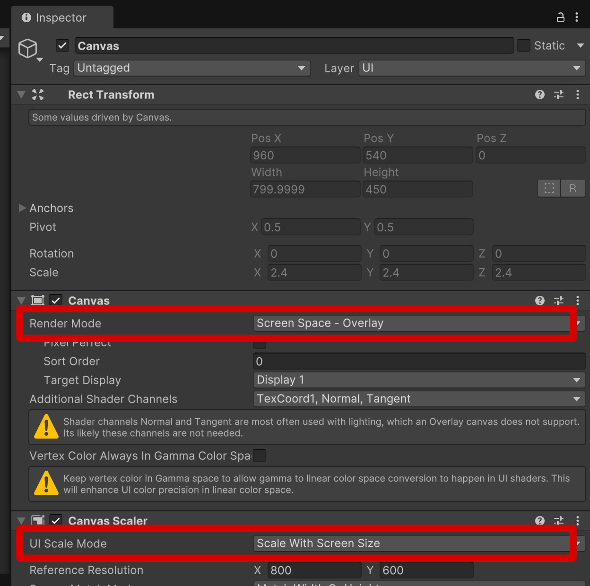
Textオブジェクトは次のように設定してください。
PosX: 0 PosY: 0 PosZ: 0
Width: 600 Height: 100
テキスト: Game ####
Font Size: 40
Alignment: 横中央寄せ、縦中央寄せ
テキストは半角英数字にしてください。日本語（全角）は文字化けしてしまいます。
日本語を使いたい場合は少しだけ作業が必要になりますので、ここでは割愛します。

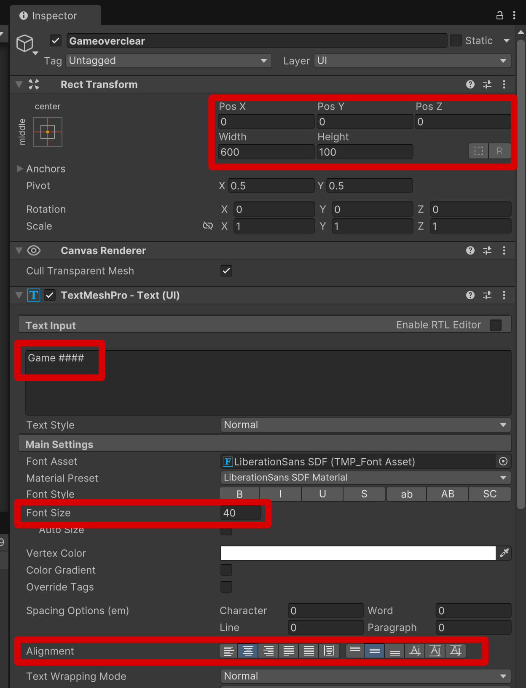
さて、ここでSceneタブにしている場合、テキストが表示されなかったのではないでしょうか。
Gameタブにすると壁の中央に表示されます。
Gameタブに表示されている状態が本来の位置なのです。
なぜこうなってしまうかというと、通常のゲームオブジェクトとテキストのゲームオブジェクトの座標の考え方が違うからです。
違う座標空間にあると覚えて置いてください。
位置の数字も全く異なります。
例えば、壁の右側は(7, 0, 0)に配置しましたが、テキストの左端をそこに合わせる場合、テキストは(235, 0, 0)あたりになります。
Sceneタブでテキストが見えていなくてもちゃんとありますのでご安心ください。
なお、フォントサイズがRect TransformのWidthとHeightの値に比べて大きい場合には文字が表示されないので注意しましょう。
メッセージ表示用のテキストは見えないようにしておく
ゲームオーバーもクリアも、そうなったときだけメッセージを表示したいので、最初はメッセージが見えないようにしておきます。次のスクリプト「ResetText」を作成し、オブジェクト「Gameoverclear」にアタッチしてください。
ボールが下の壁に当たったらゲームオーバーにする
ボールが下の壁に当たったらゲームオーバーにしましょう。次のスクリプト「Gameover」を作成し、ゲームオブジェクト「Wall Bottom」にアタッチしてください。
GameOverスクリプトがアタッチされているゲームオブジェクトはTextMeshProゲームオブジェクトとは異なるため、今までのようにアクセスすることができません。
異なるゲームオブジェクトにアタッチされているコンポーネントにアクセスする方法はいくつかありますが、今回はpublic変数を用意してゲームオブジェクト「Wall Bottom」のインスペクターウインドウで指定することにします。
TextMeshProゲームオブジェクト「Gameoverclear」をゲームオブジェクト「Wall Bottom」の「Game Over Message」のところにアタッチするか、「Game Over Message」の右横にある丸印をクリックして、「Gameoverclear」を選択してください。
これを忘れるとエラーが起こって、ゲームオーバーになった瞬間に文字を出せずに止まってしまいます。


ゲームクリアを実装する
ブロックが全部消えたらゲームクリアにしましょう。ゲームクリア用のスクリプトを作成してBlocksにアタッチ
下記のスクリプトを作成し、名前は「GameClear」にしてください子供のゲームオブジェクトの数を調べるには、TransformコンポーネントのchildCountを使用します。
Transformコンポーネントに何度もアクセスするため、Startメソッドで変数に保持（キャッシュ）しておきます。
「ブロックが全て無くなった」＝「子供のゲームオブジェクトの数が0になった」となりますので、Updateメソッド内で子供のゲームオブジェクトの数をチェックして0の時にクリアの処理を行います。
今回はクリア時に「ゲームを停止する」ということなので、ゲーム内時間を設定するTime.timeScaleの値を変更することにします。
Time.timeScaleは動画の再生速度を考えるとわかりやすいと思います。
つまり、1の場合には通常と同じ速さでゲームが進み、1より大きい場合には早送りのようになります。2にすれば2倍速に、1より小さくすればスロー再生ということですね。
初期状態では1になっています。
クリア時には0にしてゲームを停止します。これで、ブロックを全て壊した際にゲームがストップするはずです。
ゲームがストップしても、なぜかプレーヤーは動かすことができますよね？
これはTime.timeScaleが0になってもUpdateメソッドだけは実行されるからです。
これも止めたい場合はまた別の方法を考えることになりますが、今回は割愛します。
それではGameClearスクリプトをゲームオブジェクト「Blocks」にアタッチしましょう。
Blocksはブロックがいっぱいあるオブジェクトの親になっているものです。
個々のゲームオブジェクト「Block」にアタッチしないように注意しましょう。

実行してみる
では実際にどのような動きになるか、実行してみましょう。実行ボタン「▶」を押してゲームを楽しんでください。
適当なところでストップボタン「■」を押して止めてください。
これでゲームクリアからゲームオーバーまで、全て完成しました。
ゲームとしては一通り完成したということになります。
これから先はもう少しゲームとして完成度を高めていきましょう。
再プレイを実装する
現在のままだと、ゲームが終わったら画面がそのまま停止した状態になってしまいます。もう一度ゲームをしたい場合、アプリを終了して立ち上げ直す必要がでてきますので不便です。
そこで、スペースキーを押したらもう一度ゲームができるように修正しましょう。
ゲームオーバーからの再プレイを実装する
再プレイできるように、GameOverスクリプトを修正しましょう。「bool isGameOver = false;」で、isGameOver変数を定義しています。
boolというのはtrue(真)とfalse（偽)という2つの値を持つ型です。
よく状態変化（フラグを立てる）などのときに使われるので覚えておいてください。
今回の場合はisGameOverがtrueの場合はゲームオーバーでゲームが停止しているとみなし、falseの場合はゲームが続いているとみなすことにします。
Updateメソッドの中で、「if (isGameOver && Input.GetButtonDown("Submit"))」とありますが、こちらは「ゲームオーバーになった状態で、Submitボタン（スペースキーなど）が押されたら」という意味になります。
実は「(isGameOver == true) && Input.G・・・」と同じ意味で、trueのときは「== true」を省略していいという暗黙のルールがあるためにこう記述することができます。
「Input.GetButtonDown("Submit") == true」の「== true」も省略されていることに気付きますね。
「SceneManager.LoadScene("MainScene");」は、「シーン"MainScene"をロードする」という意味です。
これで完全に最初からやり直しということになります。
そして衝突メソッドの中に「isGameOver = true;」があります。
ゲームオーバーになったときにisGameOver変数をtrueにするということです。
これで、さきほどの「if (isGameOver && Input.・・・」のisGameOver部分が有効になることになります。
ビルドマネージャーにシーンを登録する
Build Profileに登録していないシーンをロードしようとするとエラーが起きるので、シーン「MainScene」を登録しましょう。メニューのFile▶Build Profilesを選択して設定画面を表示してください。
タブの「Scene List」をクリックし、「Add Open Scenes」ボタンをクリックします。
すると「Scenes/MainScene」が追加されますので、「Scenes/MainScene」のみをチェックした状態にしてください。


ゲームクリアからの再プレイを実装する
今度はゲームクリアから再プレイできるように、GameClearスクリプトを修正しましょう。ゲームオーバーと同様にフラグ(isGameClear)を用意して、フラグが立ったら（isGameClearがtrueになったら）ゲームクリアとします。
ゲームオーバーと同様、Submitボタンを押したらシーンが再読込されてゲームが再開されます。
このとき、timeScaleを1に戻すのを忘れないでください。
これを忘れるとゲームの時が止まったままになります。
ビルドする
ゲームは完成しましたが、今の段階ではUnityがなければゲームを楽しむことができません。それは不便ですので、unityなしでも動くようにゲームを出力する事をビルドと言います。
ゲームをビルドすることでパソコン、Webブラウザ等でゲームを遊ぶことができるようになります。
ここではPC用、Webブラウザ用のビルドを解説します。
プラットフォームモジュールを加える
Unityでは様々な動作環境用にゲームを作ることが可能です。動作環境のことをプラットフォームと呼びます。
プラットフォームはUnityインストール時に選択してインストールしますが、後で加えることも可能です。
Unity Hubでエディタ毎に管理されています。
下記はWeb用のモジュール「WebGL」を追加する方法です。
すぐに「このアプリがデバイスに変更を加えることを許可しますか？」という警告メッセージが出ますので、そこは「はい」と答えてください。
容量が大きくてまあまあの時間がかかりますので、しばらくお待ちください。
もしUnityの開発画面が立ち上がっていたら、いったん終了して再度起動させてください。
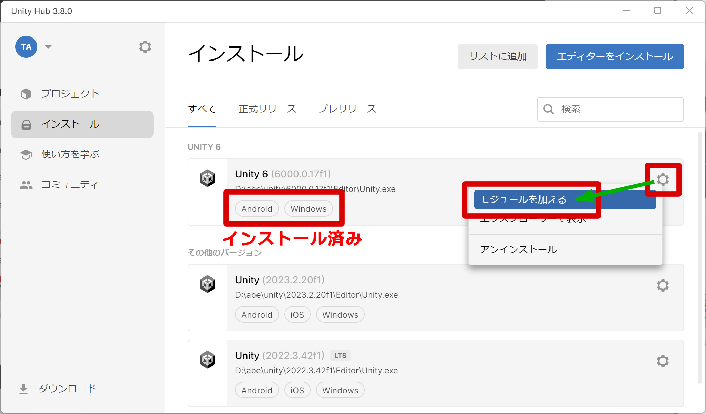
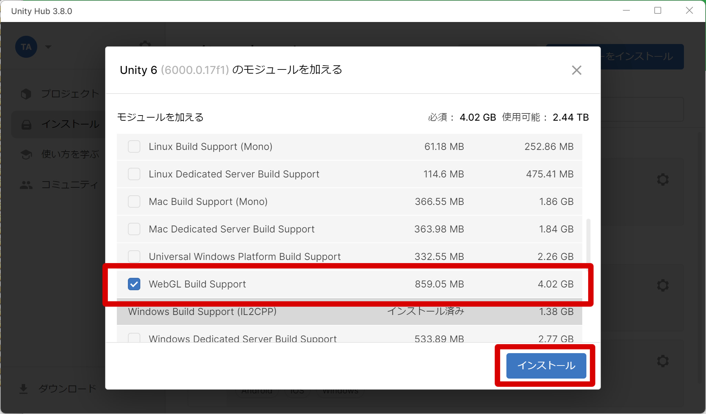
プラットフォームを変更する
プラットフォームの変更はBuild Profilesにて行います。File▶Build Profilesを選択し、対象となるプラットフォームを選択してSwitch Platformを押せばプラットフォームを変更できます。
目的のプラットフォームが表示されていない場には、前述のようにUnity Hubから追加のプラットフォームモジュールをインストールしてください。

Windows用にビルドする
まずはWindows用にビルドして実行してみましょう。プラットフォームはWindowsを選択してください。
緑の「Active」が追加されるはずです。
「Build And Run」ボタンを押すとビルド後にすぐ実行されます。
「Build」ボタンはビルドのみです。
どちらかを押せば、フォルダを選択する画面になります。
初めてビルドする場合はフォルダが作成されていませんので、「Build」等の名前でフォルダを作成し、それを選択してください。
他のプラットフォームにも作成したい場合は、さらにBuildの下に「Windows」等のフォルダを作成して、それを選択しましょう。
「Build」ボタンはビルドのみですので、実行したい場合はBuildフォルダを開いて実行ファイル（今回の場合は「breakout-sample.exe」）を実行してください。
デフォルトだと全画面表示で表示されると思います。
今回のゲームでは終了する機能を作成していないので、終了する場合は強制終了することになります。
Windowsの場合はAlt+F4で閉じたり、タスクマネージャーからプロセスを終了させます。

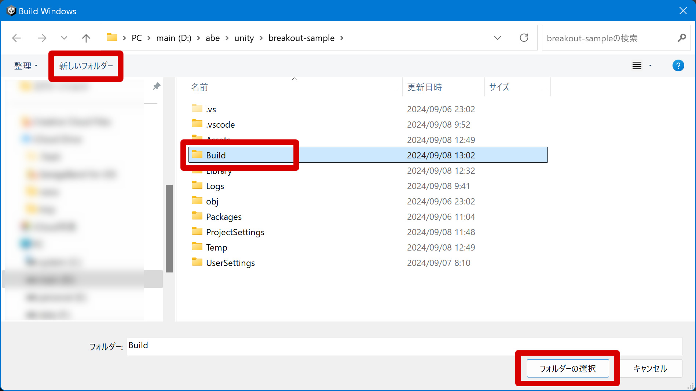
なお、Windows等で他人に渡す場合はビルドしたフォルダーの中身を全て渡してください。
実行ファイル（今回の場合は「breakout-sample.exe」）のみでは動かないので注意してください。
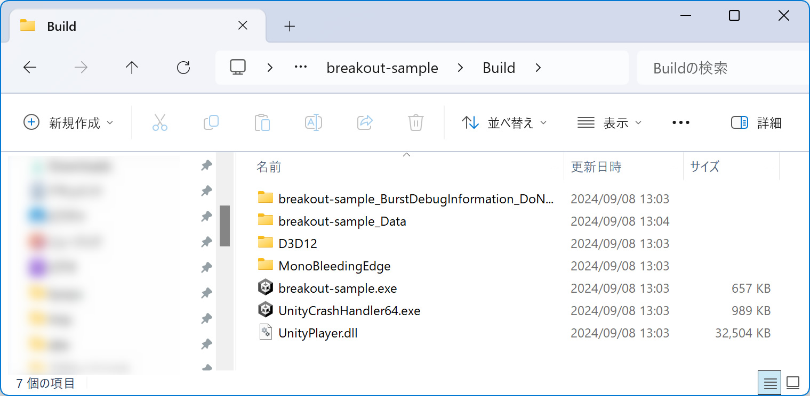
Web用にビルドする
ブラウザで遊べるように、Web用にビルドしてみましょう。プラットフォームはWebを選択してください。
緑の「Active」が追加されるはずです。
初めて実行した時は下記のようなメッセージが出てくるので、Applyを押すとUnityエディターが自動的に再起動されます。
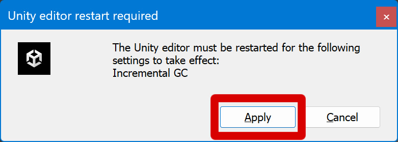
Webの場合は解像度を決めておく必要があります。
Playerタブをクリックし、「Resolution and Presentation」の項目をクリックして中身を表示させてください。
デフォルトの状態で960x600になっていますので、お試しする分には変更の必要がありませんが、ここを変えることでブラウザ上でのサイズを変更できます。
また、会社名、商品名、バージョン番号などもここで変更することができます。
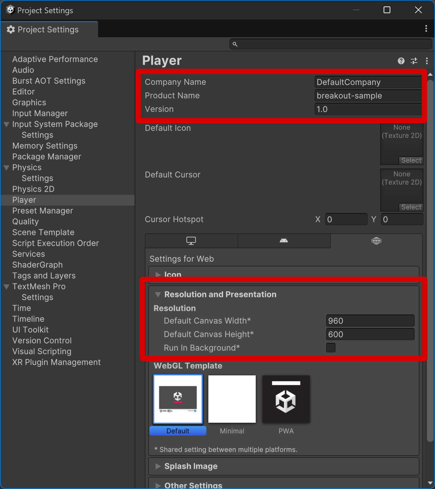
さきほどWindows用にビルドしましたが、Web用の場合はBuildフォルダの中にさらに「Web」などの名前でフォルダを作って、それを選択してください。
Web用はかなりビルドに時間がかかるので、余裕があるときにやった方がいいかもしれません。
また、ビルドが完了したときに次のようなメッセージが表示されることがありますが、「許可」を押してください。
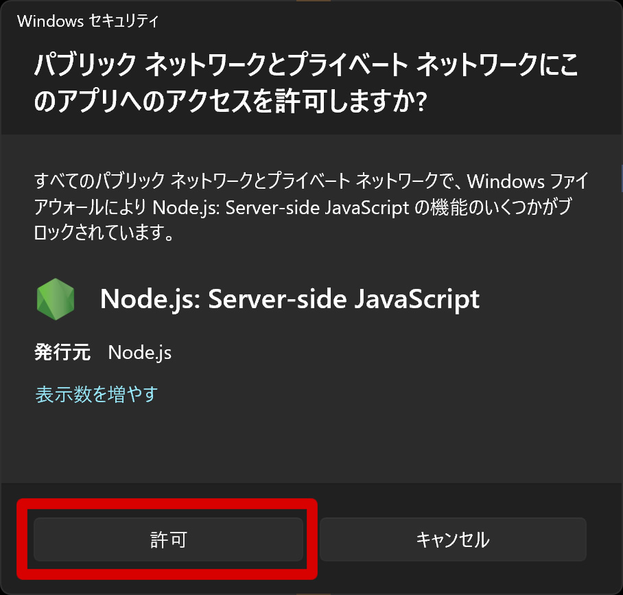
unityroomやitch.ioというサイトを使う事で簡単にブラウザ上で公開することが出来ます。
まとめ
ここまでで、やっと1本のゲームができました。大変お疲れさまでした。
これでもUnityの初歩の初歩ですし、ゲームとしての完成度もまだ足りないと思います。
ゲームとしては効果音を付けたり、1回でゲームオーバーにならないようにプレーヤーの数を増やしたり、点数を付けたりしたくなるはずです。
また、スマホ用としてビルドする場合は、プレーヤーが移動するときの入力方法を変えなければいけません。
さらに、今回開発したものには、ボールが水平や垂直に飛んだりするバグがあって、ゲームが永久に終わらなくなることがあります。
これを修正しないとゲームとしてはリリースできませんね。
こちらに関してはまた別の機会に解説したいと思います。
もちろん自分で本や参考サイトなどを見て勉強しながらやると一番身につくと思いますので、おもしろそうだなと思ったらぜひ挑戦してみてください。
長時間のお付き合い、ありがとうございました。
少しでもみなさんのUnityへの関心が高まったのなら筆者としても嬉しいです。
【参考文献】
Unity初心者向けチュートリアル ブロック崩しの作り方